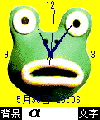
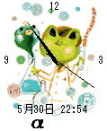
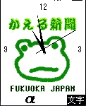
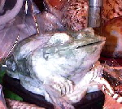
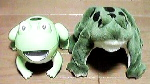
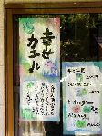

福岡かえる展３が開幕！【福岡かえる展３実行委員会】ついに開幕しました。なんと開幕初日は、北部九州地方の梅雨入り。カエルを祝福するかのような絶好の天気でした。初日から、多くの報道機関に紹介していただき感謝します。梅雨入りと６月６日のカエルの日が重なったので、よいニュースになったのかな？？ カエル展Ｔシャツをネット記念販売へ！
 【福岡かえる展３実行委員会】福岡に来たいけど来れないカエラーのために、カエル展気分を味わえる、スタッフ専用Ｔシャツを特別販売しましょー！
【福岡かえる展３実行委員会】福岡に来たいけど来れないカエラーのために、カエル展気分を味わえる、スタッフ専用Ｔシャツを特別販売しましょー！カワノナミさん作のイラストを使ったポスターをそのまま大胆にプリントしました。かなりインパクトある。このところ、世界的にブームになっている日本語Ｔシャツとして、海外旅行などに着てゆくと、現地の人に受けるかも！！ 価格は会場価格よりも割安な２０００円（送料別）で、おわけします。ただし、在庫が少ないので先着１５人が限度かな。サイズはＳ、Ｍ、Ｌの３種類のみ。 携帯画面をカエル展仕様に！   【仙台発蓮井様】福岡かえる展３用に特別に開発した、携帯画面の待受画面、および i アプリの情報を公開しています。イマスグ携帯電話に画像やアプリをダウンロードしてみましょー。きっとカエルな携帯電話世界が広がることでしょう。今回用意したのは、待受画面 ５種類と、iアプリ時計 ５種類です。さらに、 iアプリ第２弾として『モローと遊ぼう〜モローとパズル』バラバラになったモローを元に戻してあげてください。全部で１０パターン。あなたは全部クリアできるかな？ 今のところ大きさはすべて 120 X 130 でカラーのみです。対応機種は SO503i P503i P503is N503i F503i だと思われます。動作確認は F503i で行いました。（F503i のみイベントに合わせてバイブが動作します。） ダウンロードページの URL：http://www.kerokero.com/2001/Hasu/i/Puzzle/Puzzle.htm
作者に感想をください。→蓮井様
カエルドットTシャツ発売へ！【日本発=米光様】Lv99.comで、カエルドットTシャツというものを販売しています。最初の白バージョンは、残りあとわずか。カラーバージョンは、今、予約受け付け中です。
フリーペーパー「カエルブンゲイ」で連載中のカエルマンガ「カエルのブンゲくん」WEBカラー版を今週中にアップする予定です。紹介していただけると嬉しいです。
福岡市がカエルTシャツ製造？！【福岡発=すみちゃん様】福岡市役所で開催されている「水の何とか…」のイベントのスタッフがかえるＴシャツを着ていました。じいちゃん、可愛いですねー。イベント用のＴシャツなので「ちょーだい！」って言ったらもらえるんじゃないですか？
【全国かえる奉賛会】ううーむ。ほしかったぜええええええええええええ。
 韓国オニキスの蛙を発見！【釜山発=nyataro同志記者】韓国に行ってきました。 プサンの西面（ソミョン）の露天にオニキスの蛙を彫ったものがありました。買うと思ったのか２０００００ウォン（２万円）などといわれて１５０００円まですると言われ写真だけとらせてもらいました。２００円なら買ったでしょうに・・・・新種メカフロッグを発見！ 【東京発=ケロッピーセブン同志記者】新種のメカフロッグを発見。980円で捕獲しました。 名称：MR.GEROGERO ミスターゲロゲロ対象年齢：３才以上 （１２０歳のお年寄りまで対象とされているようです。） 原産地：イワヤ株式会社 MADE IN CHINA
フンニョ、フンニョ、フンニョ、フンニョ、フンニョ：歩いている音 ケロケロメカフロッグと違って、縫いぐるみタイプで、かなりリアリティーを追求していることは明白です。
【全国かえる奉賛会】すごいぞー、会場で見聞したのであるが、これは、すごい、リアルーっと感動していた観客が最後のところで、はえをべろっと食べるのをみて、卒倒しそうになるのだ。
立帰天満宮はカエル神社？！ 【福岡発=ＭＩＳＴＡＫＥＲ様】福岡市の西公園の坂を上り詰めた左側に「立帰天満宮」というとがあるとですが、そこに神饌蛙ぐっずが売っとうごとあります。社務所にゃ誰もおらんで留守やったけん現物が確かめられんやったとです。それがちーとばかし残念ですたい。このお宮さんは未調査やったら、雨蛙ば二・三匹派遣さっしゃらよかとやなかでしょうか。また、その上の光雲神社の入口付近には「谷わくどう」の説明看板も設置しちゃったです。よかったら見とっかしゃれんですか。
蝦蟇口から三円ばかしだして「立帰さん」にお賽銭しときました。「福岡かえる展３」の成功ばお祈りしときます。
投稿採用者に武功カエル徽章を授与！ |
かえる古新聞過去に取り上げた記事を見出し付きで一覧したい人は、ここをクリック◆創刊号を見る◆先週号を見る◆話題の号を見る◆かえる新聞の昔を読む◆COOL NET FROG RANKING !
|
私も入っています。。全国かえる奉賛会
大王様に会うには、このバナーをクリック。ずっと奥に写真館があるぞ。全国かえる奉賛会に入会するには、自分のホームページのどこかに、下の部分を追加するとバナーがリンク付きで表示されるぞ。どんどん入会しましょー |


|